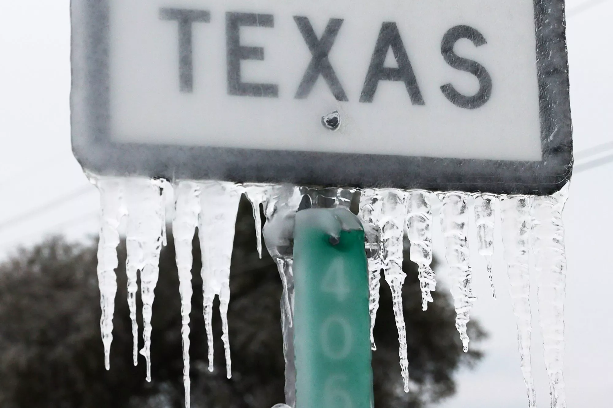
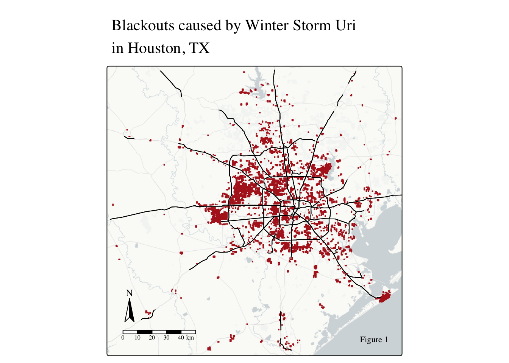
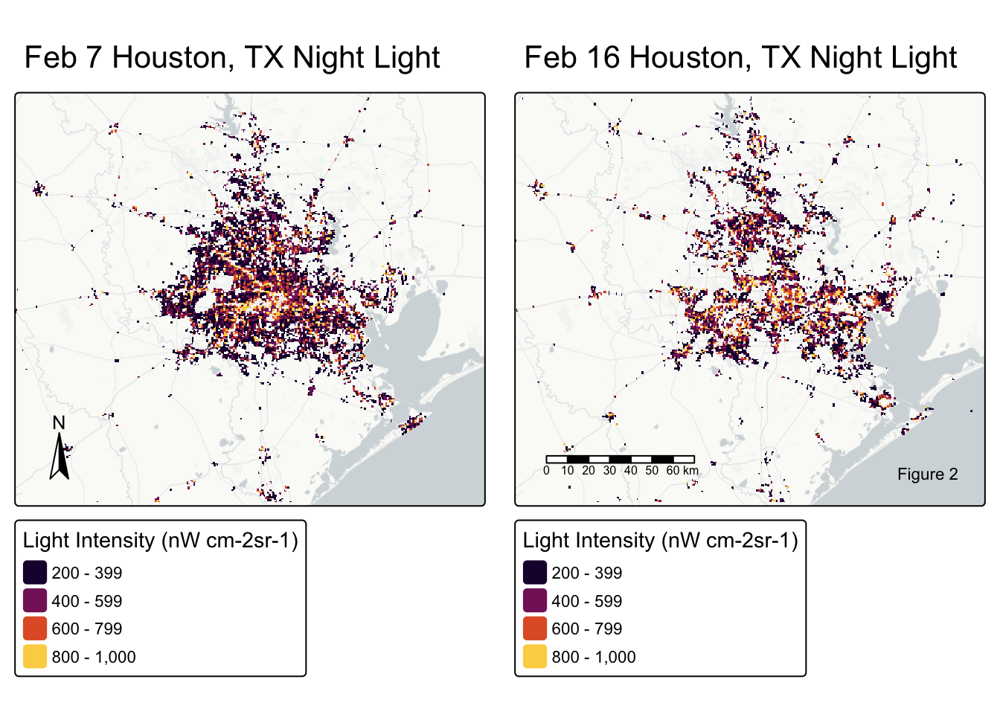
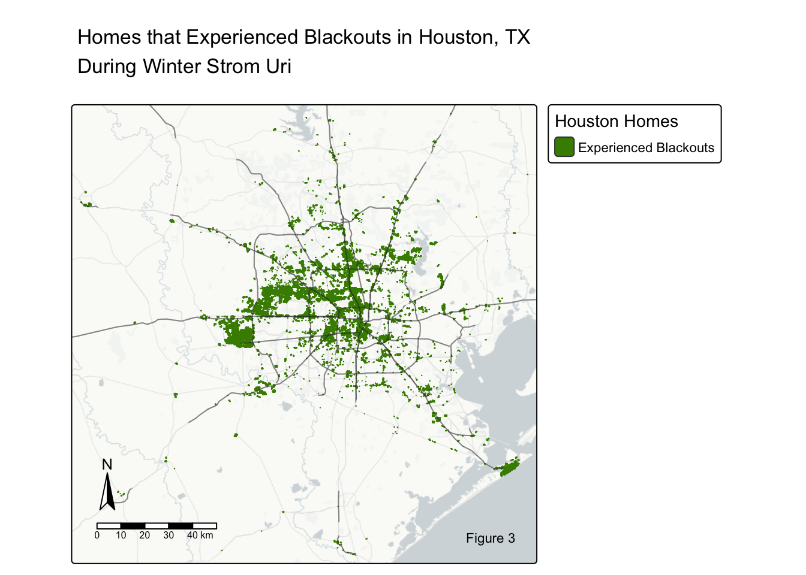
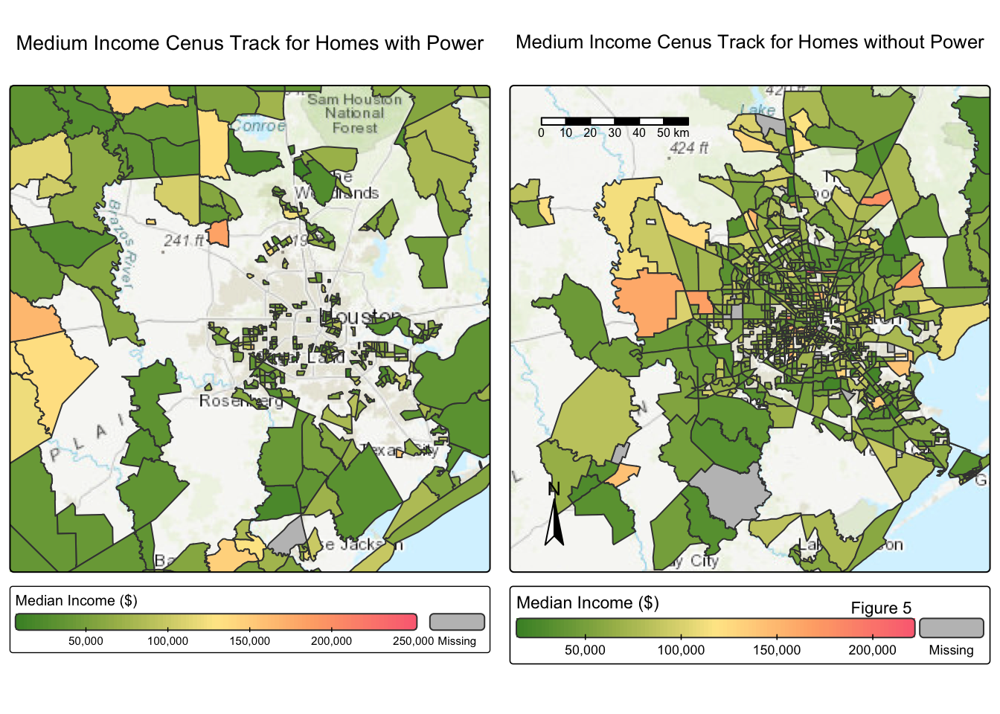
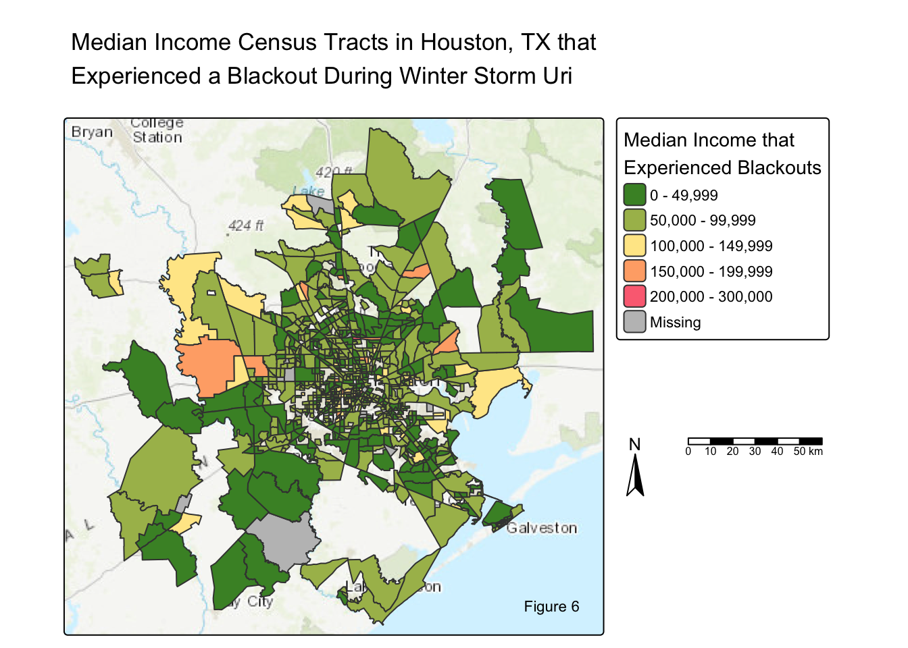
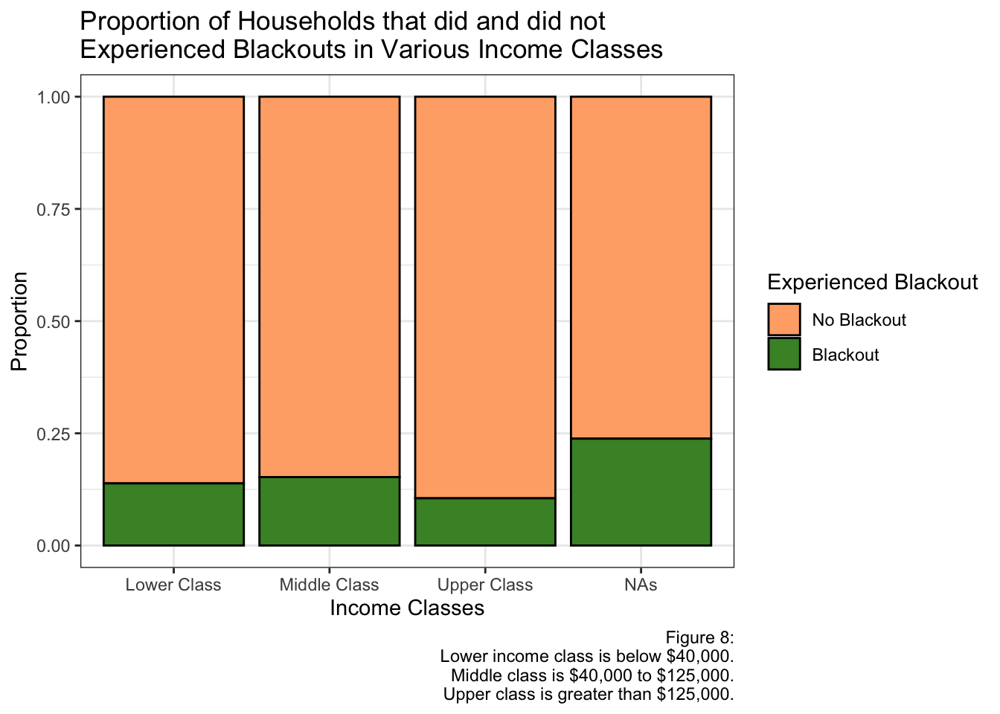

Winter Storm Uri: Houston, TX Blackouts
MEDS
R
data-viz
Exploring Winter Storm Uri’s impacts on the Houston, TX power grid
Introduction
On February 11-20, 2021, Winter Storm Uri hit Texas (NOAA, 2023). Uri bright record-breaking cold and precipitation, leading to the longest stretch of freezing temperatures in Texas history (NOAA, 2023). As temperatures plummeted, power went out across the South, pipes burst, roads iced over, and countless accidents followed (NOAA, 2023 and Watson P, 2021). At some point during the storm, millions of people (more than 2 out of 3 people) were left in the dark and cold with no access to power or a heater (Watson P, 2021).
This project aims to analyze the effects of the extreme weather associated with Winter Storm Uri on Houston’s power grid, and investigate the relationships of household median income as a possible co-variable to power outage distribution.
Credits to Joe Raedle/Getty. Image obtained from the People.
Datasets
The night light data is Visible Infrared Imaging Radiometer Suite (VIIRS) from NASA’s Level-1 and Atmospheric Archive & Distribution System Distributed Active Archive Center (LAADS DAAC). VIIRS collects both visible and infrared imagery on 10 by 10 tiles. Houston, Texas is located between two tiles (h08v05 and h08v06). Therefore, we will need to merge the tiles together. For this project, we will be looking at pre (Feb 7) and post (Feb 16) storm night light data.
The road and house data is from originally from Open Street Map but taken from a Geofabrik (a third party). Highways account for a large portion of the night lights. During Winter Storm Uri, there is most likely a reduction of traffic as roads iced over and shutdown. In order to not interpret the reduced traffic as blackouts, it is necessary we remove highways from our night light data.
Texas’s socioeconomic data is from the U.S. Census Bureau’s American Community Survey for census tracts in 2019.
Initial Steps
Always, the first step is to download all necessary libraries!
Code
# Import libraries
library(tidyverse)
library(tmap) # for map making
library(kableExtra) # for table formatting
library(geodata) # for spatial vector data
library(stars) # for spatial vector data
library(raster) # for spatial raster data
library(terra) # for spatial raster data Then, download and load in all the datasets.
Code
# Night lights data ************************************************************
# read in with read_stars()... which is used with sf functions
light_1 <- read_stars(here::here("Posts","winter_storm_uri_TX_blackouts", "data", "VNP46A1", "VNP46A1.A2021038.h08v05.001.2021039064328.tif"))
light_2 <- read_stars(here::here("Posts","winter_storm_uri_TX_blackouts","data", "VNP46A1", "VNP46A1.A2021038.h08v06.001.2021039064329.tif"))
light_3 <- read_stars(here::here("Posts","winter_storm_uri_TX_blackouts","data", "VNP46A1", "VNP46A1.A2021047.h08v05.001.2021048091106.tif"))
light_4 <- read_stars(here::here("Posts","winter_storm_uri_TX_blackouts","data", "VNP46A1", "VNP46A1.A2021047.h08v06.001.2021048091105.tif"))
# Raster data could also be read in with rast()...which is used with terra functions
#l1 <- rast("data/VNP46A1/VNP46A1.A2021038.h08v05.001.2021039064328.tif")
#l2 <- rast("data/VNP46A1/VNP46A1.A2021038.h08v06.001.2021039064329.tif")
#l3 <- rast("data/VNP46A1/VNP46A1.A2021047.h08v05.001.2021048091106.tif")
#l4 <- rast("data/VNP46A1/VNP46A1.A2021047.h08v06.001.2021048091105.tif")
# Road Data - Isolating for just 'moterways' ***********************************
roads <- st_read(here::here("Posts","winter_storm_uri_TX_blackouts", "data", "gis_osm_roads_free_1.gpkg"), query = "SELECT * FROM gis_osm_roads_free_1 WHERE fclass='motorway'")
# House data - Isolating for homes only ****************************************
houses <- st_read(
here::here("Posts","winter_storm_uri_TX_blackouts","data", "gis_osm_buildings_a_free_1.gpkg"),
query = "
SELECT *
FROM gis_osm_buildings_a_free_1
WHERE (type IS NULL AND name IS NULL)
OR type IN ('residential', 'apartments', 'house', 'static_caravan', 'detached')
")
# Texas Socioeconomic Data *****************************************************
# Looking at the various layeres
st_layers(here::here("Posts","winter_storm_uri_TX_blackouts", "data", "ACS_2019_5YR_TRACT_48_TEXAS.gdb"))
# Pulling out the geometry and income layers
geom_texas <- st_read(here::here("Posts","winter_storm_uri_TX_blackouts", "data","ACS_2019_5YR_TRACT_48_TEXAS.gdb"), layer = "ACS_2019_5YR_TRACT_48_TEXAS")
income_texas <- st_read(here::here("Posts","winter_storm_uri_TX_blackouts","data", "ACS_2019_5YR_TRACT_48_TEXAS.gdb"), layer = "X19_INCOME")Data Wrangling
Coordinate Reference Systems (CRS)
It is always important to know the geospatial datas’ coordinate reference systems (CRS). The CRS defines how the geospatial data is located and plotted. There are 2 CRS types: geographic (how the data is plotted on the 3D globe) and projected (how the data is plotted on a 2D map). It is important to use the correct CRS for your data and intended goal. Additionally, when merging or plotting geospatial data together, the datasets must be in the same CRS. Matching CRSs ensures that all spatial data layers align correctly, calculations are meaningful, and analytical results are trustworthy.
# Create print message function to check crs
crs_check <- function(crs1, crs2) {
if (st_crs(crs1) == st_crs(crs2)) {
print("its a match")
return(crs2)
} else {
warning("Updating CRS")
#crs1 <- st_transform(crs1, crs = 'EPSG:4326')
return(st_transform(crs2, crs = st_crs(crs1)))
}
}
# Check crs between roads, houses, and TX' geom
houses <- crs_check(roads, houses)[1] "its a match"geom_texas <- crs_check(roads, geom_texas) # Changed these Warning in crs_check(roads, geom_texas): Updating CRSgeom_texas <- crs_check(houses, geom_texas) # Changed these[1] "its a match"# Check crs between all the light dfs
light_2 <- crs_check(light_1, light_2)[1] "its a match"light_3 <- crs_check(light_1, light_3)[1] "its a match"light_4 <- crs_check(light_1, light_4)[1] "its a match"light_3 <- crs_check(light_2, light_3)[1] "its a match"light_4 <- crs_check(light_2, light_4)[1] "its a match"light_4 <- crs_check(light_3, light_4)[1] "its a match"# Double check the CRS change worked
st_crs(roads) == st_crs(geom_texas)[1] TRUEst_crs(houses) == st_crs(geom_texas)[1] TRUEAll CRSs match!
Creating a Blackout Mask
PURPOSE: Locate all areas that experienced blackouts in Houston, TX. To do this, we will combine the night light tiles, find areas that experienced blackouts, and crop the dataframe to Houston’s extents while excluding highway.
(a) Combine the Night light data
As stated before, the night light data is recorded on 10 by 10 tiles. Houston is split by two different tiles. Therefore, we have to merge the tiles together to create one picture of Houston, Texas.
Code
# Combine light data based on y
feb7sf <- st_mosaic(light_1, light_2)
feb16sf <- st_mosaic(light_3, light_4)Now that we have combined the tiles to create a whole picture of Houston on Feb 7 and Feb 16, we need to make sure the extents of both days are the same. Extents refer to the geospatial range encompassed within the data.
# Check if extents match
print(st_bbox(feb7sf))xmin ymin xmax ymax
-100 20 -90 40 print(st_bbox(feb16sf))xmin ymin xmax ymax
-100 20 -90 40 The extents match, and we can move on!
(b) Finding Blackouts
Blackouts are when the power difference (between pre and post night light data) is greater than 200 nW cm-2sr-1. We can find this by using mathematics operations between tiles and comparison symbols.
Code
# Finding where there are blackouts
difference <- (feb7sf - feb16sf) > 200
# Creates a list of boolean operators - returns TRUES for more than 200; FALSE for less than 200 (c) Mask Blackout Data
Mask means to convert and/or filter for specific data. In this case, we are masking for only areas that experienced a blackout. Everywhere else that did not experience a blackout gets an NA value.
Code
# Create raster mask of the same resolution and extent
diff_mask <- difference
# Assign NA to all locations that experienced a drop of less than 200 nW cm-2sr-1 change ("FALSE")
diff_mask[diff_mask == "FALSE" ] <- NA (d) Vectorize the Blackout Mask
Convert the masked blackout data frame to a vector by using an st_as_sf function. Then check and change all the invalid geometries.
Code
# Convert from a raster to a vector with st_as_sf
diff_mask_vec <- st_as_sf(diff_mask)
# Invalid geometries
which(!st_is_valid(diff_mask_vec)) # Tell us which specific ones are invalid
# Fixing invalid geometries
diff_mask_vec <- st_make_valid(diff_mask_vec)(e) Crop the blackout mask to the Houston area
By applying Houston’s city limits to st_bbox, we generated a bounding box representing the city’s spatial extent, which was then used with st_crop to clip the blackout mask data accordingly.
Code
# Create the Houston bounding box
bound_box <- st_bbox(c(xmin =-96.5, xmax = -94.5, ymax = 30.5, ymin = 29), crs = st_crs(diff_mask))
# Crop difference vector with the bounding box
diff_crop <- st_crop(diff_mask_vec, bound_box)
# ANOTHER WAY: diff_crop <- difference_mask[bound_box, op = st_intersects](f) Exclude highways from blackout area
Highway traffic is typically seen from space and accounts for a large portion of the night lights. During Winter Storm Uri, roads were iced over and shut down, reducing traffic. Therefore, in order to ensure the reduction in traffic is not misinterpreted at a blackout, we must exclude the highways from the blackout mask.
First, use st_union to unionize all the highways to make the data more manageable. Secondly, use st_buffer to make a 200m buffer zone around all highways.
Code
# Unionize road data to make it more manageable - Aggregating road data
road_union <- st_union(roads)
# Buffer areas within 200 m of all highways
road_buffer <- st_buffer(road_union, dist = units::set_units(200, "m"))To exclude the 200m road buffer from the blackout dataframe, we will use st_difference. This function finds all locations that are not in-common between the datasets.
Code
# Locating all blackouts NOT within the 200m highway buffer
blackouts_200m_highway <- st_difference(diff_crop, road_buffer) (f) Re-project the cropped blackout dataset to EPSG:3083
Re-projecting means to change the CRS (the projection). We are changing the CRS with st_transform to EPSG:3083, which refers to the NAD83 / Texas Centric Albers Equal Area. This projection is better suited for the project’s scope and goals.
Code
# Changing the crs to NAD83 / Texas Centric Albers Equal Area
blackouts_epsg_hw_buff <- st_transform(blackouts_200m_highway, crs = 'EPSG:3083')Plot!
Code
# Plot the backouts !
tm_shape(blackouts_epsg_hw_buff) +
tm_polygons(col = "firebrick") +
tm_shape(road_union) +
tm_lines() +
tm_basemap("CartoDB.PositronNoLabels") +
tm_title(text = "Blackouts caused by Winter Storm Uri\nin Houston, TX") +
tm_compass(position = c("left", "bottom")) +
tm_scalebar(position = c("left", "bottom")) +
tm_credits("Figure 1", position = c("right", "bottom")) +
tm_layout(text.fontfamily = "Times", text.fontface = "plain")
Before and After Plot
PURPOSE: Map Houston’s night light pre and post the Winter Storm.
Crop Feb 7 and Feb 16 night light data to Houston’s extent (previously created bounding box)
# Crop to Houston Texas bounding box
feb7sf_houston <- st_crop(feb7sf, bound_box)
feb16sf_houston <- st_crop(feb16sf, bound_box)Cloud cover can cause extremely light measurements. Therefore, to correctly plot the night light data, we need to take out all the extreme, outlier measurements by masking.
# Mask to get rid of extremes
feb7sf_houston[feb7sf_houston < 200 | feb7sf_houston > 1000] <- NA
feb16sf_houston[feb16sf_houston < 200 | feb16sf_houston > 1000] <- NAPlot the light intensity between Feb 7 and Feb 16 to see the considerable amount of blackouts from the storm.
Code
# Map feb 7 and feb 16
feb7map <- tm_shape(feb7sf_houston) +
tm_raster(col.scale = tm_scale(values = "inferno"),
col.legend = tm_legend(title = "Light Intensity (nW cm-2sr-1)")) +
#title = "Light Intensity (nW cm-2sr-1)") +
tm_title(text = "Feb 7 Houston, TX Night Light") +
tm_compass(position = c("left", "bottom")) +
tm_basemap("CartoDB.PositronNoLabels")
feb16map <- tm_shape(feb16sf_houston) +
tm_raster(col.scale = tm_scale(values = "inferno"),
col.legend = tm_legend(title = "Light Intensity (nW cm-2sr-1)"))+
#title = "Light Intensity (nW cm-2sr-1)" ) +
tm_title(text = "Feb 16 Houston, TX Night Light") +
tm_scalebar(position = c("left", "bottom")) +
tm_credits("Figure 2") +
tm_basemap("CartoDB.PositronNoLabels")
tmap_arrange(feb7map, feb16map, outer.margins = 0.03)
Code
# Get rid of unneccary dfs
rm(list = c('feb7sf', 'feb16sf'))Homes Impacted by Blackouts
First, check and transform CRSs to match. Secondly, check and fix invalid geometries.
Code
if(st_crs(houses) == st_crs(diff_crop)){ # Check if match
print("CRS match!")
} else {
warning("Updating CRS to match")
# Transform to match
diff_crop <- st_transform(diff_crop, st_crs(houses))
}[1] "CRS match!"Code
# Invalid geometries
#which(!st_is_valid(houses))
#which(!st_is_valid(diff_crop))
# Fixing invalid geometries
houses <- st_make_valid(houses)
diff_crop <- st_make_valid(diff_crop)Find homes that experienced a blackout
Now, we need to find the homes that experienced a blackout! st_filter (with .predicate = st_intersects) will find all the houses that are within the blackout cropped mask.
# Homes that experienced blackouts
home_blackout <- st_filter(houses, diff_crop, .predicate = st_intersects)Estimate of the number of homes in Houston that lost power
Because the ‘home_blackout’ dataframe contains 1 row for every building that experienced a blackout, we can just count the number of rows using nrow to estimate the number of homes without power.
Code
# Number of observations in the home_blackout raster
est <- nrow(home_blackout)
# Print statement
print(paste("About", est, "of Houston homes lost power"))[1] "About 164866 of Houston homes lost power"Map the homes experiencing blackouts
Code
# Map it!
tm_shape(home_blackout) +
tm_polygons(col = "chartreuse4") +
tm_basemap("CartoDB.PositronNoLabels") +
tm_shape(road_union)+
tm_lines(col = "grey20",
col_alpha = 0.3) +
tm_title(text = "Homes that Experienced Blackouts in Houston, TX\nDuring Winter Strom Uri") +
tm_compass(position = c("left", "bottom")) +
tm_scalebar(position = c("left", "bottom")) +
tm_credits("Figure 3") +
tm_add_legend(type = "polygons",
labels = "Experienced Blackouts",
fill = "chartreuse4",
title = "Houston Homes"
) 
Comparision to Income Cenus Tracks
Data Wrangling
(a) Join the Texas income and geometery datasets
In the Texas’s socioeconomic data, each row is a different census track. Whereas, the columns are different measurements for each census track. By looking at the dimensions of the two layers, we can see that the row numbers match perfectly. This makes sense because the income and geometry dataframes are just different layers of the same large dataset. Therefore, when merging the layers, we can use cbind to “stitch” the layers together, keeping all columns.
When merging datasets, its helpful to look at the dimensions before and after the merge to ensure the `cbind` worked properly.
# Looking at dataframes
print(dim(geom_texas))[1] 5265 16print(dim(income_texas))[1] 5265 3045# Join Texas geom and incomes
texas_df <- cbind(geom_texas, income_texas)
# ANOTHER WAY: LEFT JOIN: texas_df <- left_join(geom_texas, income_texas)
# Print new df's dimensions - see if the joined worked
print(dim(texas_df))[1] 5265 3061(b) Filter and merge
Filtering for homes did vs did not experience a blackout and merging the home dataset to the Texas census track data.
GOAL:
(1) Make a datasets with homes that DID experienced a blackout and their income = “income_bo_homes”
(2) Make a datasets with homes that did NOT experienced a blackout and their income = “income_NO_bo_homes”
First, need to ensure CRSs match!
# Checking crs
if(st_crs(texas_df) == st_crs(home_blackout)){ # Check if match
print("CRS match!")
} else {
warning("Updating CRS to match")
# Transform to match
texas_df <- st_transform(texas_df, crs = st_crs(home_blackout))
}[1] "CRS match!"Secondly, filter for homes that…
(a) DID experience blackouts
Use st_filter (with ‘.predicate = st_intersects’) to find the intersection of homes that experienced blackouts and the census track data.
# (1) st_filter for homes experiencing BOs
income_bo_homes <- st_filter(texas_df, home_blackout, .predicate = st_intersects) %>%
mutate(blackout = "TRUE") # Adding a column pertaining to experiencing a BO (b) Did NOT experience blackouts
st_intersetcions (with ‘sparse = FALSE’) builds a logical matrix of Boolean operators (TRUE and FALSES) that explains which geometries between x and y intersect. The returning dataframe is filled with TRUEs (where homes and census track data intersect) and FALSEs (where homes and census track do not intersect). Because we are interested in locations with NO blackouts, we care about the FALSEs. We used apply to loop over all rows to see if there are any “TRUE” vs “FALSE” values. The ! means the function only keeps rows with “FALSE”s (no intersections).
# Look for areas of intersections
idx_intersect <- st_intersects(texas_df, home_blackout, sparse = FALSE)
# Looking for areas NOT included in the intersection data
income_NO_bo_homes <- texas_df[!apply(idx_intersect, 1, any), ] %>%
mutate(blackout = "FALSE") # Adding a column pertaining to NOT experiencing a BO In both codes, the mutate function creates a new ‘blackout’ column that states if the data does (‘TRUE’) or does not (FALSE) contain homes experiencing a blackout.
To make sure the filtering worked, check the dimensions of each dataframe. The number of rows in ‘texas_df’ should be the number of rows in ‘income_bo_homes’ and ‘income_NO_bo_homes’ combined.
# Look at shapes - See if filtering worked... it did!
print(dim(texas_df))[1] 5265 3061print(dim(home_blackout))[1] 164866 6print(dim(income_bo_homes))[1] 778 3062print(dim(income_NO_bo_homes))[1] 4487 3062(c) Create dataset of all homes in Houston
Combine the information of homes that did lose power and homes that did not. Since the columns are the same, we can use rbind to stitches together the rows.
# Merge mean income blackouts and no blackout dataframes
income_merge <- rbind(income_NO_bo_homes, income_bo_homes)Visualizing blackout experiences with income
Mapping the household income distributions if they did vs did not experience a blackout.
Code
# Create my color palette
my_palette = c('#488f30', '#a9bb5a', '#ffe896', '#ffad76', '#fc7082')
# Map of mean (of median) income with no blackouts
no_blackout_income_map <- tm_shape(income_NO_bo_homes) +
tm_polygons(fill = "B19013e1",
fill.legend = tm_legend(title = "Median Income"),
fill.scale = tm_scale(breaks = c(0, 50000, 100000, 150000, 200000, 300000),
values = my_palette)) +
tm_shape(diff_crop, is.main = TRUE) +
tm_title(text = "Medium Income Cenus Track for Homes with Power") +
#tm_compass(position = c('right', 'bottom')) +
tm_compass(position = c(0.45, -0.02)) +
tm_scalebar(position = c(0.60, -0.05)) +
tm_basemap("Esri.WorldTopoMap")
# Map of mean (of median) incomes of home that experienced blackouts
blackout_income_map <- tm_shape(income_bo_homes) +
tm_polygons(fill = "B19013e1",
fill.legend = tm_legend(title = "Median Income"),
fill.scale = tm_scale(breaks = c(0, 50000, 100000, 150000, 200000, 300000),
values = my_palette)) +
tm_shape(diff_crop, is.main = TRUE) +
tm_title(text = "Medium Income Cenus Track for Homes without Power") +
#tm_scalebar(position = c('left', 'bottom')) +
tm_credits(text = "Figure 5", position = c(0.7, -0.05)) +
tm_basemap("Esri.WorldTopoMap")
# Look at both together
tmap_arrange(no_blackout_income_map, blackout_income_map)
To get a better understanding of the communities that lost power, map just the ‘income_bo_homes’ .
Code
tm_shape(income_bo_homes) +
tm_polygons(fill = "B19013e1",
fill.legend = tm_legend(title = "Median Income that\nExperienced Blackouts"),
fill.scale = tm_scale(values = my_palette,
breaks = c(0, 50000, 100000, 150000, 200000, 300000))) +
tm_compass(position = c(1.02, 0.40)) +
tm_scalebar(position = c(1.14, 0.40)) +
tm_title(text = "Median Income Census Tracts in Houston, TX that\nExperienced a Blackout During Winter Storm Uri") +
tm_credits("Figure 6") +
tm_basemap("Esri.WorldTopoMap")
Figures 5 and 6 shows us that the downtown area experienced more blackouts. However, it is difficult to understand the income variable within the maps.
Income Classes
To better investigate if socioeconomic status (particularly income level) affected the likelihood of experiencing a blackout, I categorized the population into three income groups: low, middle, and upper class.
To do this categorization, I created a new dataframe that specified the medium income level’s class. The estimated class separation for Houston, Texas is:
Lower class: $40,000 and less
Middle class: $40,000 - $125,000
Upper class: $125,000 and above
These income class numbers are based on Fullerton, 2025.
Code
# Select only needs columns and drop geometry
income_class <- income_merge[, c('GEOID', 'B19013e1', 'blackout')] %>%
st_drop_geometry()
# Add new column based on median income for INCOME CLASSES
income_class <- income_class %>%
mutate(class = case_when(
is.na(B19013e1) ~ NA_character_,
B19013e1 < 40000 ~ "lower_class",
B19013e1 < 125000 ~ "middle_class",
TRUE ~ "upper_class" # All others are upper class
) )
# Made these income classes based on Fullerton, 2026
# COUNTS of homes experiencing blackouts vs not per income class
income_class_sum <- income_class %>%
group_by(class, blackout) %>%
summarise(count = n()) `summarise()` has grouped output by 'class'. You can override using the
`.groups` argument.Plot Income Classes
Code
# Plot it
ggplot(income_class_sum,
aes(x = class,
y = count,
fill = blackout)) +
geom_col(position="fill",
#stat = "identity",
color = "black") +
scale_fill_manual(labels = c("No Blackout", "Blackout"),
values = c("#ffad76", "#488f30")) +
scale_x_discrete(labels = c('Lower Class', 'Middle Class', 'Upper Class', 'NAs')) +
labs(title = "Proportion of Households that did and did not\nExperienced Blackouts in Various Income Classes ",
x = "Income Classes",
y = "Proportion",
fill = "Experienced Blackout",
caption = "Figure 8:\nLower income class is below $40,000.\nMiddle class is $40,000 to $125,000.\n Upper class is greater than $125,000.") +
theme_bw()
Find Proportion of Income Classes that Experienced a Blackout
To find the percents of each income class that experiences a blackout, I found the population within each income bracket, filtered for the population that lost power in each class, then calculated the percent (count that experienced a blackout/total count of income bracket population).
Code
# Total of homes per each income class
class_count_total <- income_class_sum %>%
group_by(class) %>%
summarise(total = sum(count))
# Filters for home counts that experiences a blackout
class_count_blackout <- income_class_sum %>%
filter(blackout == 'TRUE')
# Combine dataframes
class_count <- left_join(class_count_blackout, class_count_total, by ='class')
# Proportions of homes that experiences a blackout per Income Class
class_count <- class_count %>%
group_by(class) %>%
mutate(prop = 100*(count/total))
# Creating a kable table
knitr::kable(class_count[, c('class', 'prop')],
col.names = c("Income Class", "Percentage"),
digits = 2,
align = 'c',
caption = "Percentage of Each Income Class that Experienced a Blackout")| Income Class | Percentage |
|---|---|
| lower_class | 13.84 |
| middle_class | 15.25 |
| upper_class | 10.53 |
| NA | 23.81 |
Conclusion
On February 11-20, 2021, Winter Storm Uri hit Texas (NOAA, 2023). Uri bright record-breaking cold and precipitation, leading to the longest stretch of freezing temperatures in Texas history (NOAA, 2023). As temperatures plummeted, power went out across the South, pipes burst, roads iced over, and countless accidents followed (NOAA, 2023 and Watson P, 2021). Millions of people (more than 2 out of 3 people) were left in the dark and cold with no access to power or a heater at some point (Watson P, 2021).
In Houston, Texas, the power outage centered around the downtown area which is seen in Figures 1 - 5. Figures 6 - 8 investigate the power outages in comparison with income census blocks. The medium income distributions of people who experienced blackouts vs did not experience blackouts are very similar and consistent with the overall medium income distribution in Houston. As shown in Figure 7 and the table, the proportion of residents experiencing blackouts is relatively consistent across income classes, ranging from about 12% to 16%. Accordingly, there is insufficient evidence to suggest that the power outages during Winter Storm Uri were biased or unjustly distributed.
Limitations to the study: The light data was from NASA’s Level-1 and Atmosphere Archive and Distribution System Distributed Active Archive Center (LAADS DAAC) which uses Visible Infrared Imaging Radiometer Suite (VIIRS). When using satellite imagery, course spatial resolution and atmospheric interference can impact the study. Furthermore, the road and house data is acquired by Open Street Map which can have data completeness and accuracy issues.
Personal Statement
I am originally from Houston, Texas, and I experienced Winter Storm Uri firsthand. The storm brought unprecedented freezing temperatures to the region, overwhelming the power grid and disrupting daily life across the state. During this time, my father and I were without electricity in our home while my mother, Dr. Hessel, remained on call at the hospital for several days. It was an exceptionally difficult week with prolonged power outages, pipes bursting, hazardous conditions keeping us indoors, and widespread school closures. The event shows the importance of resilient infrastructure and highlighted how essential preparedness and coordinated response systems are during extreme weather events.
References
National Aeronautics and Space Administration (NASA). (n.d.) Level-1 and Atmospheric Archive & Distribution System Distributed Active Archive Center (LAADS DAAC). Visible Infrared Imaging Radiometer Suite (VIIRS). https://ladsweb.modaps.eosdis.nasa.gov/
OpenStreetMap. (n.d.) Planet OSM. OpenStreetMap. https://planet.openstreetmap.org/
Geofabrik GmbH. (n.d.). OpenStreetMap Data Extracts. GEOFABRIK. https://download.geofabrik.de/
United States Census Bureau. (2019). American Community Survey (ACS). United States Census Bureau. https://www.census.gov/programs-surveys/acs.
Fullerton, A. (2025). You need to make this much to be considered middle-class in Houston. FOX26. https://www.fox26houston.com/news/houston-middle-class-texas-2025
National Oceanic and Atmospheric Administration (NOAA). (2023, Feb 24). The Great Texas Freeze: February 11-20, 2021. National Centers for Environmental Information. https://www.ncei.noaa.gov/news/great-texas-freeze-february-2021
Watson, K. P., Cross, R., Jones, M. P., Buttorff, G., Granato, J., Pinto, P., … & Vallejo, A. (2021). The winter storm of 2021. Hobby School of Public Affairs, University of Houston. https://www.uh.edu/hobby/winter2021/storm.pdf
Citation
BibTeX citation:
@online{hessel2025,
author = {Hessel, Megan},
title = {Winter {Storm} {Uri:} {Houston,} {TX} {Blackouts}},
date = {2025-12-04},
url = {https//meganhessel.github.io/Posts/analyzing_LA_fire_scars},
langid = {en}
}
For attribution, please cite this work as:
Hessel, Megan. 2025. “Winter Storm Uri: Houston, TX
Blackouts.” December 4, 2025. https//meganhessel.github.io/Posts/analyzing_LA_fire_scars.